Antes
Depois
Antes
Depois
Sorriso · 01/11Lentes em resina e coroas sobre implantesTroca de coroas antigas por um sorriso com cor, formato e tamanho planejados.
Cintra Odontologia & Estética, na Vila Curuçá
Lentes, estética facial e implantes, com planejamento individual feito pelas sócias Isabelle e Karen Cintra.
Agendar minha avaliaçãoLentes, estética facial e implantes com planejamento individual.
Cuidado próximo, resultado com a sua cara.
Arraste a imagem para comparar o antes e o depois. Cada resultado depende de uma avaliação individual e varia de pessoa para pessoa.
Antes
Depois
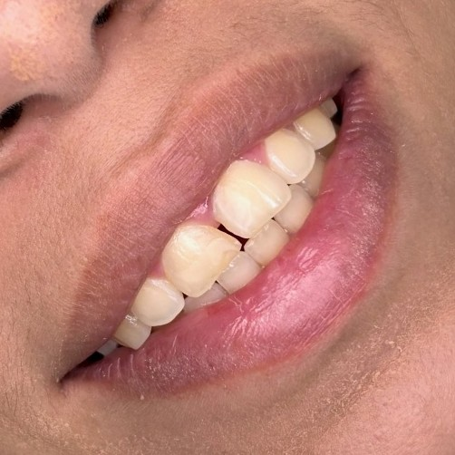
Antes Depois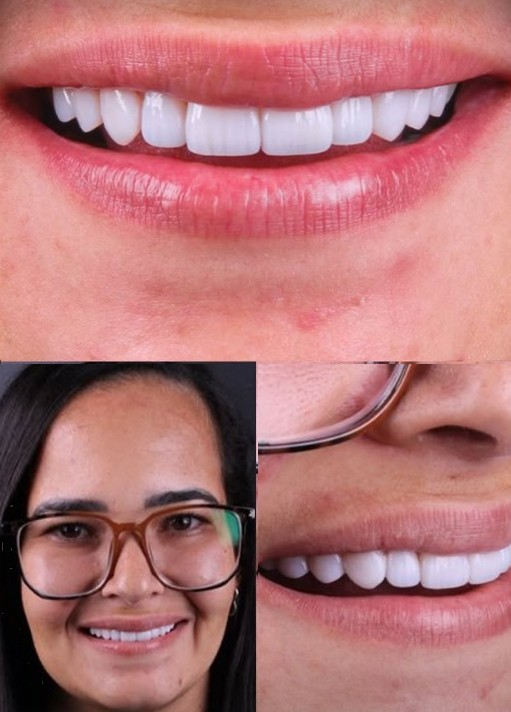
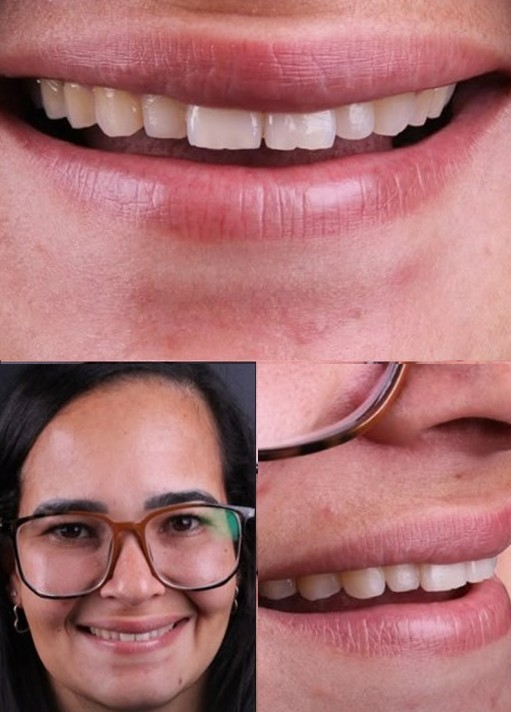
Antes Depois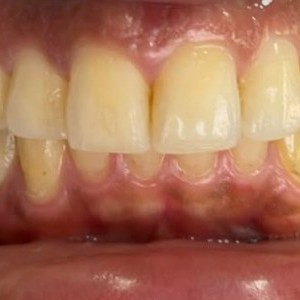
Antes Depois
 Antes
Depois
Antes
Depois
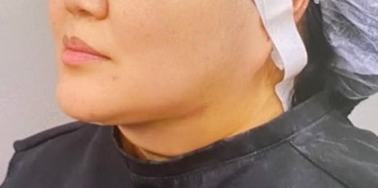
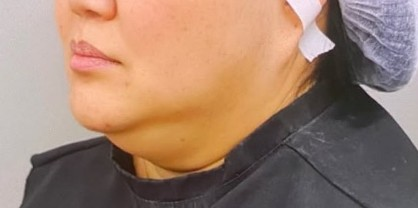
Antes Depois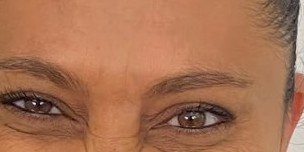
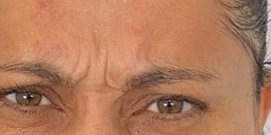
Antes Depois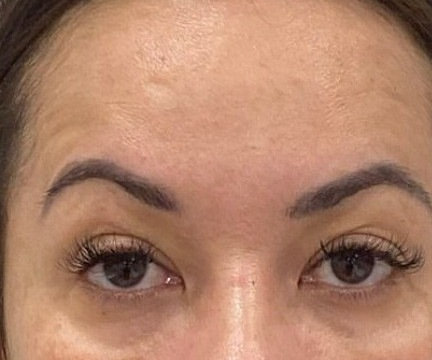
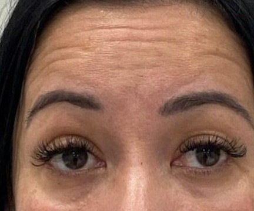
Antes Depois
 Antes
Depois
Antes
Depois

Casos atendidos pela Dra. Isabelle Cintra (CRO-SP [inserir]) e pela Dra. Karen Cintra (CRO-SP [inserir]). Imagens publicadas com autorização dos pacientes. Ver mais casos no Instagram
Na primeira avaliação você conta o que incomoda, a Dra. examina e explica as opções indicadas para o seu caso. A decisão é sua, sem pressa.
Dentes manchados, com espaços, lascados ou de formato irregular.
A resina é aplicada diretamente sobre os dentes, no consultório, com planejamento da cor e da forma.
Quem quer mudar cor, formato e alinhamento com um acabamento sob medida.
Lâminas finas feitas em laboratório a partir do seu planejamento. A indicação depende da avaliação.
Sorriso em que a gengiva aparece demais ou tem contorno desigual.
Ajuste do contorno da gengiva para deixar o sorriso mais proporcional, muitas vezes junto com as lentes.
Dentes amarelados ou escurecidos pelo tempo, café, vinho ou cigarro.
Clareamento com acompanhamento profissional, depois de avaliar a saúde dos dentes e da gengiva.
Dentes desgastados, quebrados ou com coroas antigas.
Recuperação da forma, da cor e da função dos dentes, com planejamento individual.
Quem quer suavizar linhas de expressão.
Aplicação com a Dra. Karen Cintra, respeitando as características do seu rosto.
Quem quer mais definição ou contorno nos lábios.
Preenchimento feito com delicadeza pela Dra. Karen Cintra.
Falta de um ou mais dentes, ou coroas antigas que precisam ser trocadas.
Reposição com implantes e coroas, cuidando da mordida e da aparência do sorriso.
Isabelle e Karen Cintra são irmãs e sócias, apaixonadas por transformação e pela renovação da autoestima de cada paciente. Juntas, seguem um princípio: ouvir o que você quer, avaliar com calma e indicar apenas o que faz sentido para o seu caso.
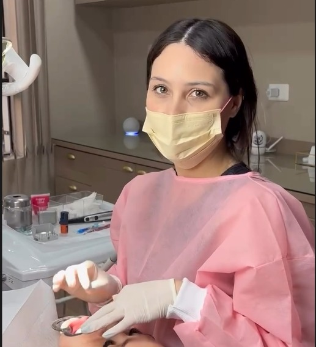
Fundadora e sócia
Cuida do planejamento do sorriso, com foco em lentes, reabilitação e resultados naturais, que valorizam a beleza que você já tem.
Falar com a Dra. IsabelleSócia
Atua na estética facial, com toxina botulínica e preenchimentos feitos com delicadeza e respeito às suas características.
Falar com a Dra. KarenVocê sabe o que vai acontecer antes de sentar na cadeira.
Conta o que gostaria de mudar e combina o melhor dia e horário com a equipe.
Avaliamos seus dentes, sua gengiva e sua saúde bucal, e ouvimos o que incomoda você no seu sorriso.
Apresentamos as opções indicadas para o seu caso, com as etapas de cada uma. Você decide no seu tempo.
Fazemos o procedimento combinado e orientamos os cuidados para manter o resultado.

Fale com a equipe pelo WhatsApp e combine o melhor dia e horário com a Dra. Isabelle ou com a Dra. Karen.
Os resultados variam de acordo com cada paciente.